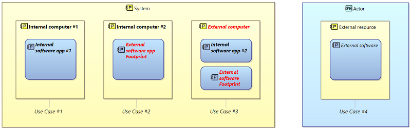
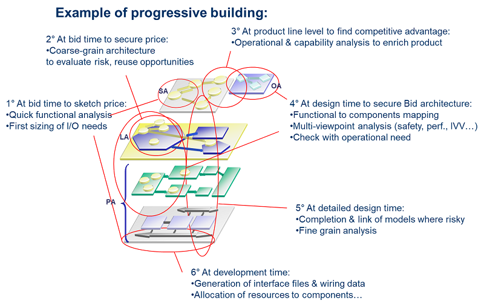

This page collects questions raised by engineering teams of various domains and organizations, about to deploy Arcadia, or already deploying it and needing some support or clarification on the method and its use.
The answers given in the document are those that were proposed to engineering teams and applied by them in a coaching context, with little or no filtering. So they may not be relevant to any context or domain, neither are they accessible to any engineer, but at least they faithfully reflect real life concerns and the way they were addressed.
Warning: These questions and answers are by no means self-sufficient to understand Arcadia and master its deployment. The reader is strongly recommended to read Arcadia reference documents before entering this one.
Jean-Luc Voirin ©Thales 2023
The content of this page is also available in a PDF format: Arcadia Q&A.pdf
Operational analysis is an essential contribution to the development of input data for defining the solution. It requires temporarily setting aside expectations about the solution itself, in favor of understanding users, their goals, and their needs, free from preconceptions about the solution.
However, its most important use is to stimulate a deeper understanding and definition of the need beyond the customer's requirements alone, achieved through a critical analysis of the formalization represented by the operational analysis.
Much of the added value of operational analysis lies in the "analysis" aspect rather than just capture or formalization, as it stimulates different perspectives, opportunities, constraints, and risks that might not otherwise have been taken into account. It can lead to proposing new capabilities that the system could offer, new services expected from it, as well as operational contexts and previously unforeseen risk situations.
For example, in many operational analyses, the first-level description is often not very different across missions. This is normal, but to be useful, it is necessary either to refine it to reveal differences at a finer level, which will feed the reflection (not recommended a priori), or to ask the question: "where are the differences, on which entities and activities do they occur, what constraints do they impose?" The difference may lie in constraints, non-functional properties, quantitative elements of scenarios, nature of information and time scales, etc., which will then be essential for the performance of the solution in real operational context.
Furthermore, the behavior of cooperative entities is often well described in operational analysis (although often generic, see above), but the behavior of other actors (threats, objects of interest, or non-cooperative actors in particular) is often not. However, there is a good chance that many of the constraints and expectations on performance come from the specificities of their behavior, their temporal evolution, their own goals and capabilities, etc. All of this must be captured and analyzed within the framework of operational analysis.
It is then essential, of course, to compare the analysis of the system's needs (and beyond) with this analysis and to evolve one or the other if necessary.
A good way to start is to forget about modeling and instead focus on "telling a story" that describes the needs, expectations, and daily lives of end users and stakeholders.
This can be done using existing documents, observing stakeholders using current systems and means, or conducting interviews ("what is your job? Tell me about a typical day or mission. What makes your activities easier? What complicates or jeopardizes them?..."). At this stage, the formalization is limited to writing free text and checking that they are representative of the need.
Secondly, identify the key words in the previous material and determine for each how it could be represented in the operational analysis model (if relevant):
Finally, build an initial model on this basis and validate/extend it with stakeholders.
Here are the types of questions that can be asked during the development of the OA, which can either lead to completing it or deriving elements for the rest of the architectural definition (not exhaustive!):
Important note: there are many other analysis and creativity approaches, such as CD&E, design thinking, approaches like C-K, and methodological approaches supporting enterprise architectures such as NAF V4, which would be useful and which the analysis of OA does not replace (and which I also recommend considering). But on the one hand, they are complementary and do not cover the same needs or the same scope of reflection as Arcadia, and on the other hand, their data should mutually nourish each other with that of OA.
Based on operational analysis (OA), system needs analysis (SA) will define the contribution of the solution (referred to as the "system" hereafter) in terms of scope and expectations, particularly functional expectations. In other words, what services should the system provide to users to contribute to operational capabilities?
When conducting system needs analysis from operational analysis, the following questions should be asked:
The separation between OA and SA, in addition to the benefits mentioned above, also allows the first major choices of engineering to be formalized and analyzed, particularly in the case of a new product or product line.
In these situations, several ways of meeting the same operational need may appear: different distributions of contributions between the system and its environment (use of other systems, for example), more or less advanced automation entrusted to the system, etc.
Engineering is therefore required to make an initial choice, not of design, but of delimiting the need allocated to the system.
It may then be wise to explicitly capture the different alternative terms, either through variability in the same SA, or in several SA candidates to be evaluated to select the most appropriate one for the context.
A good definition of the human/system interaction is important, particularly regarding the users or operators of the system, both for communicating with the client and for preparing for integration, verification, and validation (IVV). To achieve this, you can ask yourself the following questions:
In some (mainly software oriented) modelling approaches, what is called a "logical" architecture is a definition of (software) components and assembly rules, while "physical" architecture is a description of one or more deployments of instances of these components, on execution nodes and communication means.
This is not the case in Arcadia: the major reason for logical architecture (LA) is to manage complexity, by defining first a notional view of components, without taking care of design details, implementation constraints, and technological concerns - provided that these issues do not influence architectural breakdown at this level of detail.
By this way, major orientations of architecture can be defined and shared, while hiding part of the final complexity of the design, and without dependency on technologies. As an example, some domains or product lines have one single, common logical architecture for several projects or product variations.
In fact, logical architecture should have been named 'notional architecture', or 'conceptual architecture', but we had to meet existing legacy denominations.
Physical architecture (PA) describes the final solution extensively: functional behavior, behavioral components (incl. software) realizing this functional contents, and resource implementation components (incl. execution nodes).
Physical Architecture provides details what have not been taken into account at LA level, in order to give a description of the solution ready to sub-contract, purchase or develop, and to integrate. So all configuration items, software components, hardware devices... should be defined here (or later), but not before.
For this reason, maybe physical architecture would be better named as ‘finalized architecture’…
As you can imagine, then, for one logical component, we can often find several physical components, relation between logical and physical levels being one to many. Similarly, functional description of component is notional in LA, and detailled enough in PA so as to sub-contract it.
Consequently, for example, it is much easier to start defining an IVVQ strategy or a product variability definition, on the limited number of functions and components mentioned in LA, to quickly evaluate alternatives and select best ones. Once this is done, the former definition can be checked, refined and applied to the fully-detailed description of PA.
For the same reason, once they have finalized their physical architecture, many people feel the need to synthetize it in a more manageable and shareable representation, grouping some components and functions, hiding others, etc. Which is simply building a posteriori their initially lacking logical architecture!
However, if really the level of complexity does not require two functional levels for the description of the solution, then the following recommendations should be followed:
A capability is the ability of an organization (incl. Actors & Entities) or a system to provide a service that supports the achievement of high-level operational goals. These goals are called missions.
A mission uses different capabilities to be performed. A capability is described by a set of scenarios, and functional chains (or operational processes in operational analysis), each describing a use case for the capability.
In Arcadia, there are operational missions and capabilities in OA (Operational Analysis), as well as system missions and capabilities (including users) in SA, LA, and PA (System Need Analysis, Logical, Physical Architecture). An expected operational capability of an actor should, if the system contributes to it, be derived (via traceability links) to one or more system capabilities in SA.
In Capella, there should also be missions in both OA and SA, as provided for by Arcadia.
To understand what the concept of mission and capability covers, we can use the analogy of an employee in a company:
The expected behavior of the system or a component is described in Arcadia by the functional definition constituted by the dataflow (functions, functional exchanges, functional chains and scenarios, modes and states, exchanged data).
A function is fully described by its textual definition (and/or the requirements associated with it), its possible properties or attributes and constraints, the data it needs as inputs and those it is responsible for providing as outputs, as well as its implications in the functional chains and scenarios that involve it: functional exchanges involved, definition (textual) of the function's contribution in the chain or scenario ('involvements' in Capella).
This functional definition must be made at the finest level of detail necessary for understanding and verifying the expected behavior. It is the functions at this level of detail (called "leaf functions") that are allocated on the components and that define their behavior.
For convenience, both to offer a more accessible level of synthesis and representation, and to structure the presentation of the functional analysis, these leaf functions can be grouped into more synthetic parent functions. But these parent functions have only a documentary role (by categorizing the leaf functions): the reference remains the leaf functions. For Arcadia, they alone carry the definition and behavioral analysis of the architecture.
For example, a functional chain that would pass through a parent function itself instead of its leaf functions would leave a major ambiguity in the model regarding the role of each leaf function and its expectations (data to be produced, contribution to the chain, etc.).
Therefore, in a finalized state of the modeling, all leaf functions should carry the functional exchanges involved and ideally be each involved (as well as its exchanges) in at least one functional chain or scenario.
Most modeling tools offer (mainly) a top-down construction approach based on decomposition (of components, functions), and the delegation of links connecting the previous elements at each level of decomposition. For example, first-level functions will be defined, connected by exchanges, then sub-functions will be inserted "into" each function, and a delegation link will be placed between a sub-function and the end of each exchange connecting the mother function to its sister functions.
In addition to the added complexity if a sub-function needs to be moved from one level to another, or if exchanges need to be added from the sub-functions, experience shows that this approach is neither the most natural nor the most common. For example, when modeling textual requirements, each of these requirements will result in the creation or enrichment of leaf functions, and exchanges will naturally occur between these leaf functions. One may then want to group these leaf functions into parent functions, but without having to go back and recreate all the exchanges to link them to the first-level functions with delegation links at each level. This is rather a bottom-up approach, and most often a combination of both (middle-out) is used.
This is why Arcadia recommends that, in a finalized state of modeling, only leaf functions carry exchanges, directly between them and without delegation. Thus, in a bottom-up approach, it will suffice to group leaf functions into a parent function at as many levels as desired; in a top-down approach, it will suffice to create sub-functions and then move each exchange from the mother to the sub-function that will take care of it.
Arcadia and Capella then propose automatic synthesis functions, only in the representation, to display diagrams in which the exchanges of the sub-functions are reported on the parent function if it is the only one visible. Similarly, exchanges can be grouped into hierarchical categories, which allow a simplified representation of several exchanges of the same category into a synthetic pseudo-exchange*.
*Capella supports simple (and multiple) exchange categories, but does not yet support hierarchical categories.
The dataflow describes all the inputs required by each function and its potential outputs. However, these outputs and inputs may not be constantly solicited or used in all the system usage contexts, as defined in particular by its capabilities.
Similarly, the functional dependencies in the dataflow (functional exchanges) indicate that a function may receive its inputs from several other functions that are capable of producing them, but not necessarily all at the same time.
Therefore, the dataflow describes all the possible exchanges between functions, which must not be questioned in the system operation (that's why it's immutable and cannot be modified).
Furthermore, the system is subject to variable usage conditions (or use cases), not all of which may require the full range of production capabilities and exchanges between all functions.
Thus, in one of these use cases (referred to as a context, often described in a capability), only a subset of the dataflow is valid and used. This is what is described by the functional chains and scenarios associated with the capability: which part of the dataflow is used in a given context, and how this subset of the dataflow is implemented. And that's why functional chains and scenarios are described separately from the dataflow itself, and depend on the context (capability) in which they are exercised.
In Arcadia, initially, a functional chain is intended to carry non-functional constraints, typically end-to-end, in a given context (capability):
A functional chain is a means to describe one specific path among all possible paths traversing the dataflow,
In order to avoid any ambiguity, especially when allocating non-functional properties to a functional chain (latency, criticality, confidentiality level…), some rules should be defined and respected to precise the meaning of a functional chain contents.
As an example, let's consider the case of a latency that the functional chain must respect end-to-end:
Obviously, I would recommend the simplest solution whenever there is no counter-indication to do so.
Note that this may require characterizing/classifying functional chains according to their uses and the associated conventions for each.
Functional Chains Vs Scenarios:
Both can and probably should be used. Functional Chains (FC) are more appropriate to describing a “path” in the dataflow, either to better understand the dataflow itself, or to specify (often non-functional) constraints such as latency expectations, criticality for safety reasons (e.g. associated to a feared event)…
For time-related details, scenarios (SC) are better adapted, but they hide the overall context that dataflow describes.
When FC become complex (especially with several entries and outputs), then understanding their behavior may become tricky, and scenarios could be easier to understand: a rule of thumb could be “if you need to show how the FC behaves, by using your mouse or hands on a diagram, then consider using scenarios.”
Although it is true that scenarios and functional chains are two facets of the same concept, each represents it for a different purpose:
Data flows are there to show dependencies between functions (data required for operation, data produced), especially in order to build and justify the resulting interfaces. So it is indeed "real" exchanges that must be considered and not just pure control without any underlying "concrete" exchange.
I think that trying to transform Arcadia data flows into activity diagrams (AcD) or EFFBD would be a mistake: they do reflect the essential initial objective of expressing the need and orienting the solution (architecture):
This contract or "user manual" of a function may include, as input dependencies, "activation conditions" indicating that the function can only be executed upon explicit demand: the characterization of exchange items as events can, for example, fulfill this purpose. Therefore, a functional exchange can also be activating, for example.
But this is absolutely not a sequencing link in the EFFBD or AcD meaning, a link that simply translates a precedence or execution anteriority; by the way, this often appears unnecessary or even harmful to impose while describing the need or orienting a solution, as it would be an over-specification issue, risking freezing constraints that do not need to be.
Let's take an example:
I can chain the oil change of Mr. Dupont's car after the changing of the coolant when it arrives at my garage because his engine is hot. As a result, I tend to put sequence flows between these two functions in this order.
But for Mr. Durand, who dropped off his car at the same time, his engine is cold when I take care of it after Mr. Dupont's, so I will first change the coolant before doing the oil change. So, pure sequence flows are "contextual" and do not reflect an "intangible" dependence between functions.
Moreover, if we look at the change of the coolant alone, we can hardly see what it would need as input from the oil change. On the other hand, we have overlooked (perhaps by focusing a little too much on control) an essential input, which is the engine temperature, and also the need for a function to control it, or even to cool down/heat up the engine beforehand…
Let us remember that Arcadia was designed for the description and verification of architectures, and not for directly executable processes. As a result, there are different needs and also limits to be put in place: for example, if we were to put a pure sequence link (without any data exchange) between two functions, and each one was allocated to a component located on a different processor, we would introduce an inconsistency in the definition of the architecture and interfaces: without "physical" communication between the two components, there is no way to impose the order of precedence described in this way.
However, it may be necessary to express - separately - the aspects of 'sequence in a given context'; the Arcadia functional chains and scenarios are there to express this aspect, without polluting the dataflow, by separating the concepts well. Pure sequencing information can be added here if needed.
A loop with multiple iterations can be represented, for example, in a scenario (sequence diagram), and even a pure sequence link can be used in a functional chain or operational process (being aware of the risk of inconsistency between sequence links and real interfaces, mentioned above).
Similarly, if necessary, a sequencing function that commands those to be chained (involving an exchange with each of them, of the activation item type) and one or more scenarios that express the behavior of this function in different contexts can be added, thus reflecting the required activation order in each context.
Reminder: Arcadia separately defines the nature (or type) of data that can be exchanged (between functions or between behavioral components) and the use that is made of them.
The data model describes a piece of data independently of any use: its composition (its attributes), its relationships, possibly non-functional properties such as the level of confidentiality for example (via associated properties or constraints).
The content of each exchange is described by the concept of Exchange Item, which groups (and references) several data to be exchanged as a whole, simultaneously and coherently with each other (for example, the three geographical coordinates and the velocity vector of a mobile).
Each exchange carrying an exchange item references it in turn in the functional dataflow (several exchanges carrying the same EI may reference it). But so far, only the nature of the exchanged data has been described, which details the dependency between the functions of the dataflow.
Most often, the need to specify that a data must take a particular value arises to describe the expected behavior in a given context, i.e. in a reference to an exchange of a scenario or a functional chain. In this case, it is the reference to the exchange mentioned by the functional chain or the scenario that will specify the value taken by each data mentioned in the EI*.
Another need also arises when it is necessary to describe a conditional behavior. This is the case for a 'control node' in a functional chain: the condition on the data is expressed on each 'sequence link' leaving the control node.
This is also the case for a 'control functional sequence' in a scenario: the condition on the data is expressed on each control functional sequence**.
*This reference is implemented, in Capella, in the form of a 'functional exchange involvement' for a functional chain, or a 'sequence message' for a scenario; the description of the value on the data can be defined in the 'exchange context'.
**In Capella, the description of the value on the data can be defined in the 'guard' of the 'operand' grouping the exchanges concerned.
Let's imagine that we have one or more clients requesting data (or other information) from a server. At the functional level, we will have a "provide..." function allocated to the server component and a "request..." function allocated to the client component.
At the SA level, we can often limit ourselves to defining a single functional exchange from "provide" to "request" to represent the dependency between the functions, and nothing more.
In LA (and possibly in PA), the natural and most logical rule would be to create two functional exchanges:
This ensures the readability of scenarios and functional chains, and characterizes the definition of inputs and outputs of each function.
These two exchanges and the associated exchange items (EI) could then be translated into a single behavioral exchange between the client and server (with a convention to be defined, such as the request being directed from client to server, which is consistent with scenario sequence messages and returns). The EI of the component would have an IN parameter, the reference to the data, and an OUT parameter, the data itself, and would ideally be connected to the EI of the functional exchanges.
If we want to save modeling effort and use only one functional exchange, we can use the IN and OUT of the EI to represent exchanges in both directions, with the following precautions (in this case, the convention must be described precisely as it is subject to interpretation):
In the Arcadia method, not only is it allowed to have multiple exchanges exiting from the same port, but it is even recommended, and even essential, in certain cases, and not just to simplify the work of the modeler (although it does contribute to this):
By definition of a function, output ports express what it is capable of producing, independently of its uses (and thus of the number of uses).
For example, a GPS localization function is capable of providing a position. This position can, depending on the case, be used by one, two, 10... other functions, and this is not the concerns of the localization function. It is out of the question to define as many output ports as there are potential users, because that would mean that its definition would depend on the number of its users and would have to be modified every time a new one arrives...
Therefore, in this case, it has one output port, and only one. Each use of this position will result in a functional exchange between this output port and a port of the function that needs it.
Note that the remark also applies to input ports: they indicate what inputs the function needs to work; even if a function can receive data from multiple sources, if it processes them indiscriminately, then only one input port should be defined, which receives exchanges from various sources.
Linking several exchanges to a port means that they have no a priori relationship with each other: they are likely to occur at any time, independently of each other (such as requests from multiple clients to a server, for example, or sending emails by a server to multiple recipients), and the data transmitted a priori only share a common type (defined in the data model and the relevant exchange item), but they may be different instances.
On the other hand, to indicate that a position calculation function must combine a position from a GPS and another position received from an inertial unit, for example, this function will have two input ports (one for each source) carrying the same exchange item, which will group and describe the coordinates of the position.
If additional constraints are to be specified, such as simultaneous distribution of the same data to multiple recipients, or selective sending..., then dedicated functions for this purpose (split, duplicate...) are used. And if the same output is to be provided with different quality of service (e.g., a position accurate to within 10 meters every 10 seconds and another accurate to within 100 meters every second), two distinct ports will be defined, each with a constraint or a requirement on the quality of service.
Arcadia does not provide for the allocation of functions to implementation components (IC), but only to behavioral components (BC).
It's not so much the allocation of functions to ICs that is problematic, but rather its consequences for exchanges: what happens, for example, if two functions communicate, one on an IC and the other on a BC? Through which ports? What is the concrete physical meaning of this?
Likewise, this makes the meta-model more complex (should functional exchanges be allocated to physical links?), as well as the exploitation of the model by analysis views (safety, security, RAMT, etc.).
In fact, in a number of cases, it may be more appropriate to ask why: for example, if power supply functions are placed in an IC for an electronic system-level model, is it because they need to interact with processing functions? If so, there is probably a behavioral component to define to manage them, interaction "protocols" to define (at the level of exchanges and behavioral components), and routing of these exchanges through physical links, etc.; placing the 'power supply' function on an IC would not solve all of this. And is it really useful at this engineering level? It all depends on how it is used; if the main reason is "documentary" (to remember the need for such a function in later development), attaching a constraint or requirement on the component concerned, qualifying them appropriately (voltages, currents, loads, etc.), would probably be simpler and more useful.
«In physical architecture, a Behavioral Component (BC) could be a hardware component. In this case, why can't we create Physical Links between BCs? With Capella, I'm forced to artificially create 2 BCs.»
«A Behavioral Component could be a hardware component.» Yes, in the sense that a functionality can be realized by a hardware component (e.g. generating a 28V power supply, managing memory – by a MMU...). This component is therefore a behavioral component.
However, even in this case, it is necessary to distinguish between the outputs of the functionality (electrical energy, memory segment addresses...) and the means of conveying them (cables or backplane, address bus...). It is therefore important to distinguish behavioral exchanges from physical links, and to be able to allocate the former to the latter.
Similarly, for components, the interest of distinguishing behavioral components from implementation components lies notably in different non-functional properties: for example, if I want to allocate software components to execution resources, I need to separately specify the resources required by each software component (BC), and the resources offered by each implementation component (IC): computing power, memory, etc., in order to compare them. And I may also want to define different ways of allocating the same BC to different ICs. To achieve all this, it is therefore necessary to have the two concepts separated.
Of course, simplifications are always possible, but it is necessary to make sure that this will not cause other problems, especially for the exploitation of the model by analysis viewpoints (safety, security, RAMT, etc.). It was therefore preferred to systematically create an IC in these situations, which sometimes does require "putting an IC around a BC," but makes the model more regular and easier to exploit.
« If my job is 'power supplies', then a transformer that takes 220V and transforms it into 12V is behavioral, and the physical links are on these components. I don't want to create an Implementation Component (IC or Node) for nothing and have a Behavior Component inside. What would you do for my example?»
I would distinguish:
That way, I could distinguish between a case where the transformer is used as a voltage converter, and another case where the same transformer (IC) is used as a low-pass filter, for example (the distinction being made by the BC).
(By the way, we could also imagine mechanisms in Capella that would assist in this creation of ICs transparently, as is the case for ports today, created automatically as soon as an exchange is created).
The expressiveness of languages such as basic UML or SysML (as available by default in COTS tools), which generally use 'Blocks' for all types of components and functions, is often insufficient, as is the tool support. For example:
For these various points (and many others), Arcadia and Capella, while not perfect or claiming to be exhaustive, offer proven solutions; among others:
Interfaces in the context of Arcadia and Capella are not classes, and the two concepts are clearly distinct:
All of these concepts are not necessarily to be used in a given context and may - must - be adjusted to strict needs.
First, is Arcadia adapted to your scope and goals? Do you really target solution building, architecture definition & design and engineering mastering? Or are you mainly addressing better customer need understanding, focusing on customer side-capability operational deployment, programmatic issues… that he wants you to address (possibly together)?
Before starting, it would be useful to list main challenges and expectations of engineering, along with building a ‘maturity map’ of the subjects that your engineering will have to face, so as to orient modelling towards addressing low maturity subjects firstly, when and if appropriate. Driving modelling by its major uses and challenges is key for stop criteria and contents definition.
Some of the most frequent misunderstandings in applying the method lie in:
Other typical pitfalls follow:
Arcadia, based on a component-based approach to architecture construction, relies on functional definition (dataflows + capabilities, functional chains, scenarios) to define and justify components, their interfaces, their expectations, and especially transverse behaviors that involve multiple components (functional chains, states, modes...).
The basic idea of Arcadia for modeling interfaces between behavioral components is to rely on functional definition:
Once the functions are allocated to behavioral components:
In summary, we synthesize and group the functional EIs into an interface (by simple reference), and similarly group the FE into a CE.
Finally, when behavioral components are allocated to implementation components:
As a result, it is possible to have several EIs on a component exchange, originating from one or several FEs. However, if we want to indicate that sometimes we exchange one part, and sometimes another, and we want to show it in the CE, it is preferable to create several behavioral exchanges. In this case, it may be necessary to create categories for grouping the behavioral exchanges for documentary purposes.
Note: The software approach known as "component-based development" (CBD) favors encapsulation; that is, we try whenever possible to use a component by only looking at it from the outside, without having to know how it is made inside, and therefore without having to "open the box" to connect to internal sockets.
The ports and interfaces are there to group, abstract, and provide a view of the "user manual" of the component (at least for behavioral components); they should therefore provide the appropriate "natural" level of detail in the component behavioral exchanges. The detailed interactions should be seen at the functional level (via functional exchanges).
Similarly, according to the principles of CBD, we should only connect high-level components (not sub-components) to preserve the abstraction that high-level components constitute (being able to consider them as a black box). The ports of sub-components would therefore only be connected to the ports of the parent component through delegation links. However, experience shows that there may be exceptions, particularly in more physical or material domains. In these cases, direct links between sub-components are necessary.
Textual requirements are, for most customers, the traditional and most used way of specifying their needs (note that more and more customers use and require models as well). So they cannot and should not be discarded in our process, at least as an input for our engineering and a source of justification links towards IVV for Customer.
However, textual requirements suffer from weaknesses that may impact engineering and product quality:
Models tend to solve these weaknesses, thanks to:
This leads, internally in our engineering practices, to using models as much as possible to describe both need and solution at each level, while complementing them with textual requirements, either to detail expectations (e.g. to describe what is intended from a leaf function behavior), or to express requirements that are not efficiently expressible in the model (e.g. environmental or regulation constraints).
However, it should be noted that:
But the key point is to treat these requirements according to their real usage in engineering, and governed by the model whenever possible (for structuring, navigation, justification, etc.).
Therefore, internally, requirements will be mostly model elements, and complementary textual ones. Both will be related to customer requirements by traceability links, allowing justification from test results up to customer requirements, through model elements verification.
Requirements that can be formalized as model elements (hereafter referred to as model requirements) include requirements of the following types:
Requirements that can hardly be modeled are for example:
There are at least three major uses for these model-based requirements, as well as complementary associated textual requirements:
In these three uses, I do not see any reason to "take the requirements out of the model" for the engineering level concerned. So for me, the simplest and most productive solution is to manage these requirements (system requirements, sub-system requirements) in the model only, with the appropriate links to URs, which are themselves by default in the model.
This also has the merit of greatly simplifying everything related to reuse, variability in product line, versioning, branch reporting, configuration management, feeding inputs and models of specialty engineering, etc. (all sources of complexity that are still ahead of us...).
The essential point here is to consider and treat these requirements according to their real use in engineering, and to govern them by the model whenever possible (for structuring, navigation, justification...).
To summarize the global approach:
Here, we mainly consider the requirements received from the client (user requirements, UR), assuming that the main uses of the model are:
What is important is that in a finalized engineering, every requirement is allocated either to a model element, to another engineering element (simulation, study...), or to a subsystem. It would be useless and artificial to constrain or overload the SA to account for requirements that do not constrain either the functional aspects or the system's interactions with the outside world (this may be better understood with an example like "the processors used must be octo-core Core I7 ").
It is important to understand the purpose of the operational analysis and when it comes into play in engineering. The operational analysis is particularly useful when seeking to best satisfy a client's need, without having an imposed system scope, or by seeking innovative ways to satisfy this client's need.
The OA should not mention the system, as it aims to understand the client's need without any assumptions about how the system will contribute to it; this is to avoid too quickly restricting the field of possibilities (which will only be done in System Analysis, by deciding at this level what will be requested from the system and what will remain with the operators and external systems).
The observation is that when the system is mentioned in operational analysis, potentially interesting alternatives in system definition are already excluded.
Let's consider this example: the client's need is to have means to hang a painting on the wall, the trend is to formulate the need as "how to use my drill system, what to do with it". As a result, we find the system (drill) in the operational analysis, so the game is over, no smarter alternative is possible. Operational analysis is not very useful, as it duplicates the role of System Analysis.
What Arcadia (and Architecture Frameworks such as NAF) suggests is to restrict Operational Analysis to what the client and stakeholders need to do: the (operational) capacity to have a localized fixation point in a specific location. Therefore, I am not yet talking about a drill in the operational analysis, but I am trying to analyze the need well: should the fixation be reversible? can the wall be damaged? should the position of the painting be adjustable? what will be the maximum weight of the painting? what will be its size? will it have to be placed and removed frequently? who will ensure the fixation, with what qualification?
From this Operational Analysis, Arcadia recommends a capability analysis, i.e., finding the different possible alternatives and comparing them: here,
We analyze the various solutions (compromise facilitated, price, user training...) in subsequent candidate System need Analysis and early Architecture perspectives (SA/LA/PA), and choose the best (best compromise). Suppose it is the drill and dowel; we can now define the system, its system capabilities (fix a dowel) and its functions in final System Analysis (drilling, choosing the diameter, controlling the depth...).
Revisiting the OA with each evolution of technologies can then allow us to propose new products or solutions.
Once again, focusing on the system in Operational Analysis can bias the analysis. Two examples (a bit caricatural):
Another question and scenario: how to talk about maintenance in OA without taking into account the thing being maintained?
Taking into account the thing being maintained does not mean representing it as an actor: one can perfectly well describe, at the OA level, the maintenance processes of the system under engineering, describing only the maintenance team activities: dismantling, bench testing, fault localization, software and firmware updating, configuration verification, etc.
Then, in the SA, we will try to deduce the requirements on the system, by formulating questions derived from the OA: "how should the system be designed to be easily dismantled? What enabling systems are needed to test it, and what functionalities should they have? What observability capabilities must the system have to assist in fault localization? What software updating means? etc.
Some of this will translate into SA as requirements allocated to the system, and some as required functions of the system (e.g. download, version supply, observability or alerting reporting functions...).
DO NOT include the system in the OA, as indicated above. The OA focuses on the users; the scope and expectations of the system will be defined and analyzed in System Needs Analysis (SA).
Set the boundaries of the coverage area: this is not easy, but otherwise you will end up modeling the entire organization of the client or users. The question to ask is like, "will this concern the users of my system, the systems interacting with them and with it, etc.?"
Do not forget to look for discriminators, priorities, criticality, etc., which will guide the system's choices and compromises in the following perspectives – along with value-driven engineering.
It is impossible and useless to formalize the whole operational material. It is sometimes better to capture it with organized or structured text and extract from it, to populate the OA model:
The model is there to organize and help analyze, detail and illustratethe raw textual data, provide a representative and synthetic view, that can be manipulated and analyzed in a systematic way, and then be related to the rest of the analysis and definition (SA, LA PA, simulations, IVV, etc.). But not exhaustively.
Obviously, the consequences of such an analysis can be scary, fearing an inflation in the size of the OA model, on the one hand, and the prospect of having to translate all this into SA afterwards. Several suggestions or recommendations in this case:
In Arcadia, Modes and States are similar in concepts and description, but bear different meanings and uses.
The first important issues to address in architecture modeling for M&S, are mainly:
Theoretically speaking, any trigger should be produced by a well-identified function somewhere in the system, and be carried by functional / components exchanges.
By the way, remember that Arcadia and Capella target architecture engineering, and not detailed [software] design: if complexity of M&S raises, this might (or not) mean that they describe detailed design rather than expected general behavior.
For a more advanced “Modes & States engineering”, Arcadia and Capella introduce new concepts:
A recommended approach to verify that architecture design is valid concerning expected behavior, taking benefit from these concepts, would be (simplified):
Operators can be modeled outside the system (as actors) or inside the system (in which case they are represented by components of the system*). In both cases, we can and should distribute the required functions to support the need between the system itself and its operators.
One criterion for differentiating the cases could be:
* Capella allows a behavioral or implementation component to be characterized as human.
From the theoretical point of view, System and Actors definitions should have the same kind of capabilities, both being built of implementation components (IC), hosting behavioral components (BC).
Among other benefits, this allows to move BC or IC from system to actors and vice versa, for different configurations or versions in a product line, and would ease complex transitions from system to sub-systems and Test means; this also allows defining true roles allocated to several actors and possibly to the system (using a Replicable element (REC) BC for role definition and replicas (RPL) BC to allocate a role to an actor or component), which is useful for Human-System Interfaces, or for example to manage variable delegation of service (at some time inside the system, and at other time in an actor). It is also a means to express that the system should use the same kind of IC as external actors (e.g. same kinds of computers), etc.
Leaving theory to meet practice, I propose (as shown in Arcadia reference) that, for sake of simplicity (to avoid creating unused components):
In some cases, system and actors can be intricated in a complex manner and system boundaries not so clear, with respect to behavioral components (BC) deployment on implementation components (IC).
Let us consider 4 use cases (numbered 1 to 4):
The idea is to separate the kind of objects (Actor, BC, IC) from their qualification as internal to the system or not (based on the definition above).
A way to address these different cases is adding a property on objects, to define their origin and scope ('INTERNAL' or 'EXTERNAL'). This way, in PA, you could define UC #2 and UC #3 easily, while keeping them inside the system “boundary”.
In UC #3, why is ‘External computer’ IC (red), hosting ‘Internal software app #2’ BC, located inside the system boundaries? Because it has direct and strong impact on system architecture, hence is to be considered as part of architecture evaluation: if it is a computing board, then depending on its power and available processing capacity, you might have to modify hosted software contents and interfaces; it will consume electrical power and contribute to heating and weight; it shall be part of reliability, security and cyber analyses; etc. This also partly applies if the computer is an external workstation (e.g. it affects system cyber-security analyses).
In UC #2, why is ‘External software app’ hosted by ‘Internal computer #2’ internal system IC mentioned here, although not part of system delivery? For the same reasons: if it is a software running on one of the system computers, then you have to provision enough computing resource for it, and in case of its failure, it could shut the computer down. Furthermore, it might struggle with system own software components for board resources. So at least you should characterize its behavior and resource need under these perspectives. So it should be modelled as well, in a simplified form characterizing its functional interfaces and impact on the system components. This is what is called 'footprint') here.
Let's consider a drone system in which the onboard computer exchanges data with the control station via any type of radio communication channel.
For example, the computer sends sensor data (position, attitude, speed, etc.) produced by a "flight data computing" software component to the "trajectory display" component of the control station (both behavioral components). The communication itself is ensured by a dedicated communication board connected to the computer by an ad hoc link. In the model, this board will implement at least one behavioral component, "data transmission".
A common mistake is to model data passing from "flight data computing" to "data transmission", and then from "data transmission" to "trajectory display" (via exchanges carrying position, altitude, and speed).
Indeed, from the point of view of the "flight data computing" and "trajectory display" components, they are unaware of the communication means employed. In their software code, each component communicates directly with the other, without intermediary.
From the point of view of the "data transmission" communication component, it should not have knowledge of the content of each exchange it carries; otherwise, the specification of this component would have to evolve each time a new exchange is added between application components. Instead, it should receive generic communication service requests, which will be sent to it by the computer's operating system, not directly by the application components.
A much better way to model this case is to connect the application components directly to each other, without going through the communication component. The latter, and the communication board as a whole, remain in the model, as they are part of the architecture, consume resources, and must be included in safety, reliability, etc. analyses, but they are not connected to the application components. Moreover, the implementation details of the application components on the operating system, and the integration between it and the communication component, are irrelevant at this level of engineering modeling and should not be included.
The way to model a system which includes communication layers (such as the 7 layers OSI model) is interesting, because it emphasizes the different scopes that different engineering teams have to deal with, and how they should articulate with each other.
Let us imagine a system in charge of supervising scattered installations on the Mars planet, environmental constraints requiring developing a new ruggedized, specific communication stack. Here, we consider the top level system engineering model.
Therefore, putting both application- and protocol-related interfaces on the application components would have no meaning.
This requires enriching the description of each application level exchange (or exchange item) in top level system engineering model, with complementary properties (such as required communication service or paradigm), and then synthesizing them so as to specify expected communication services.
The means to define the performance profiles is trickier, and depends a lot from the level of detail in the system engineering model, and the details of the dynamic behavior description. It might have to come from another separated (non Arcadia?) model, more dedicated to performance issues.
Furthermore, system model, application software model and communication model have different lifecycles: adding or removing a new application exchange in the former will (and should) not affect the latter (the communication model).
Now, a question could be raised: is there any reason to include some description of communication subsystem in the top level system engineering model? The answer may be 'yes' if the communication infrastructure is likely to impact the system architecture definition: for example by adding dedicated communication components, or influencing performance analysis (communication layers might consume some resources in the system), and also to specify to the communication engineering team the network nodes that have to be fed with communication capabilities, and more...
In this case, both application level and communication level "sub-models" will coexist in the same top level system engineering model, but the communication sub-model would be less detailed: for example, you could define only communication components (because of their need for resources), communication services functions and functional exchanges (if needed for specification), but no protocol-related component exchange and interface. You should not try to link both sub-models explicitly, with exchanges, for example, because of the reasons above.
One way to express, in the top level system (application) engineering model, 'the relation between “the required communication services in the application model” with “the provided communication services by the communication model”', could be (among others) to
Note: this situation also applies to other fields beyond communication stacks engineering, such as cyber engineering for example.
In this meaning, a protocol describes the time-related chronology of interactions between two (or more) entities, so as to establish the connection between them, perform various exchanges of information, material, etc., while ensuring the appropriate quality of communication service, and then ending the connection.
In this case, we use the following concepts of Arcadia to describe the protocol (usually starting at functional level for most details):
Arcadia also introduces protocol as a language element, and interaction roles (as described in Arcadia reference book), but this is not yet supported by Capella. In the tool, these elements can be grouped into a Replicable Element Collection, and/or in a library for example, in order to be reused.
When modeling a system with an atmospheric pressure sensor, for example, one often encounters an external actor "Atmosphere", to which one tends to allocate a function "provide pressure", which is questionable from a physical point of view and unnatural. The question is even more difficult when it comes to identifying the component exchanges, the ports (the surface of the sensor on one side may be, but what about the atmosphere side?), and the physical link (the air?).
To improve the modeling a bit, I reason (as often) by separating the functional from the structural perspective, then by analyzing the conditions of use of the modeling carried out, including in terms of the level and scope of responsibility of the engineering.
From the functional point of view, we could very well imagine having only a detection function allocated to the sensor, without input; this is precisely the case for simple environmental measurements, in which permanent physical quantities are measured, without any other interaction with the environment. For pressure or temperature, for example, that's what I would do a priori, unless I am in charge of the engineering and model of the sensor itself, where I might accept a function of the atmosphere producing pressure - I would then rather name this function 'is characterized by physical quantities', for example.
But when there is a real interaction (influence of the system on the object following detection, for example), or if the situation of the external actor evolves (e.g. entering the field of a camera...), it is often interesting to start with the external actor equipped with a function providing information to the sensor. In this case, I define:
For an inertial navigation system, for example, it is more complicated: one would not have an environment function 'imposes inertia laws'; to test the system, it would be moved, nothing would be done in the environment; so I might not even add an external actor here. Or else, an exchange of 'relative movement', and an actor function of the type 'locates in space'.
This function also allows in particular to build scenarios and functional chains translating the feedback of the system on the behavior of the actor.
Note also that for qualifying the physical quantities involved and their nature, the data model and exchange items may suffice most of the time.
From a behavioral point of view, it could be imagined to do away with behavioral exchanges between the actor and the sensor, insofar as it will not be the responsibility of the system to carry out this exchange, except through technological means of realization that are not within the purview of system engineering and the Arcadia model.
This could be justified, for example, if a sensor receives multiple types of information from the actor, such as temperature, pressure, and humidity, which would be grouped into a single behavioral exchange, but this has no significant impact on engineering at this level, in my opinion.
One of the justifications given for behavioral exchanges, wanting to make them appear in scenarios, does not seem very strong to me, because a scenario will not be less understandable if it starts from the sensor rather than the actor - but it will be simpler...
From an implementation/physical point of view, Here, I would not put any physical link, except for exceptions of course. There is often no reality to this type of link and no responsibility of engineering on it either; engineering will not define a physical interface with the atmosphere, which would appear in the ICD for example, simply to have a line between the system and an “atmosphere” actor.
In this case, it is better not to mention the external actor (the atmosphere here) outside of the functional aspect above. Its definition is useful in the operational and system need levels, because it can evoke constraints, choices, etc., but at the physical level, it is hardly useful anymore.
One potential exception (but I'm not even sure about it) could be, for example, a physical link indicating whether we use infrared or visible image acquisition as a medium for image capture.
In summary,
For educational purpose, the elaboration of main Arcadia perspectives is presented as an ordered sequence: Operational Analysis OA, then System Need Analysis SA, then Logical Architecture building LA, Physical Architecture building PA, ending with Building Strategy BS. This reflects the rationale and role of each perspective delivering useful inputs for next ones, whose completion and quality depend strongly on the former. Similarly, inside each perspective, engineering tasks and activities are also connected by what should be considered as dependency links, but not necessarily time-related ordering of steps & tasks.
In fact, while preserving these dependencies, any process or order can be used to elaborate the definition of the architecture as governed by Arcadia:
Furthermore, in real-life conditions, iterations and loops are necessary between all engineering activities, yet they are not explicitly represented in Arcadia processes for sake of simplicity.
Consequently, although the workflow may appear to be straightforward, activities may be carried out in a different order; however, for best quality of engineering results, each activity should not be fully completed without having checked its outcome against its expected entries and dependencies, for consistency.
This mainly depends on the process that you want to promote, which itself depends on the specificities of your engineering practices.
For example, when modeling is introduced into an existing engineering process (evolutions of an existing product, significant reuse of already developed elements), it is easier to parallelize the construction of perspectives since the information already exists, and the means of justifying the design are not a priority.
It is just necessary to ensure overall consistency between perspectives and viewpoints, but the existing know-how explains how to do it, and we are rather in a bottom-up approach, particularly to rebuild levels of abstraction and need from a detailed existing product.
Conversely, in the definition of new products or functions or architectures (or parts of them), the construction logic is essential. Here, each perspective must be justified and checked to ensure that it conforms to the expectations of the previous ones, and the dependencies are strong: it is not possible to effectively define the architecture or interfaces without referring to the functional aspects, for example. Furthermore, the verification of needs is essential, and therefore operational analysis is essential, as well as the link with the system need analysis.
The order in which the different Arcadia perspectives are developed is not immutable, and each perspective may have to be reconsidered and evolve throughout the engineering lifecycle. This is particularly true for operational analysis. An example of engineering involving evolving operational concepts or capabilities is as follows:
The OA (or several specialized or dedicated OAs) can also be used to describe the life cycle of the system itself, including the stages of specification, design, deployment, operations, maintenance and support, evolution, retirement, etc., if necessary, particularly in cases where engineering is involved beyond the delivery of the solution: cyber-security, autonomy, use of learning or big data analytics, for example.
In this case, stakeholders (operational entities, actors: designers, maintainers, etc.) can be added, who have activities (design, IVV testing, analysis of operation data, updating cyber protections, algorithm evolution, etc.), operational processes, information or other needs, successive phases which can be translated into modes, etc. Then, the system can be considered as an object of these activities (which does not mean describing it, which is not recommended in OA!).
Next, in the following perspectives, elements of the system architecture can be related to this description through justification links: for example, a link between a calibration function and the tuning process that requires it at production time, integrated stimulation tools intended for troubleshooting, packaging for transportation, etc.
At the same time, this operational view can also accommodate the description of successive versions and configurations that will need to be delivered to the customer for their "capability roadmap", in the form of user capabilities to be provided over time...
When a product or system exists and a new need arises, it is necessary to verify if the existing product can meet the need, and to determine what changes it must undergo. Arcadia proposes an approach based on the proper use of each perspective:
The above confrontation can be done either at the level of a complete model or only in the context of reusing an existing element. In this case, this reusable item (RI) is supposed to be described in a library, as a model element (e.g., for a component, its ports, interfaces, or data, its functional content, its implementation or test scenarios, its non-functional properties such as performance or capabilities, etc.).
At least the following consistencies must be verified:
In terms of concrete implementation in the model, several strategies are possible, for instance:
Modeling often reveals (but does not cause) ambiguities in the distribution of roles and responsibilities in engineering. These ambiguities are often responsible for teamwork troubles that affect the effectiveness of engineering and the quality of the final product. Clear decisions must be made to avoid such potential problems.
The architects of an engineering level are responsible for engineering choices and decisions, which are translated into information entered into their model, including:
This level of engineering is also responsible for the integration/verification of the components it defines and the behaviors it has specified.
It is therefore necessary to ensure a clear boundary between two engineering levels and to specify who is responsible for what, particularly regarding breakdown into components and interface definition.
Note that delegation does not mean having no right to review and appropriation: the PE can validate the design and use the HE/SE models if necessary, for example, for document generation, etc.
Arcadia recommends that system engineering team and sub-systems, software and hardware teams work in a collaborative manner, in co-engineering, to elaborate the architecture of the solution.
The place where this co-engineering should take place is the system engineering Physical Architecture. This architecture is defined collaboratively, under responsibility of the system architect, then it is the basis for sub-systems, SW and HW development or acquisition contracts (through automatic transition/generation of sub-systems need analysis SA models, extracted from system PA).
If a modification is to be applied (evolution of customer need, or adjustment of system architecture, or even modification requested by a subsystem team), recommendation is to manage it in the system-level physical architecture, in a collaborative, co-engineering manner (involving system and subsystems teams stakeholders).
Then a new subsystem SA is to be generated accordingly. This subsystem SA is to be considered as read-only by subsystem engineering team; the SS team work is then to confront this new SS need evolution, with the current state of SS architecture design, and make it evolve accordingly.
To summarize, the collaboration workflow may sometimes be bottom-up (e.g. evolution requested by subsystem team, or reuse suggestion), but the model workflow should only be top-down (from system PA model towards subsystem SA model).
There is no fundamental opposition to a model reflecting several levels of engineering, but there are several conditions for this to work, and experience shows that it can be very risky and generally not recommended. Essential conditions to reduce the risks of such operation would be:
Note: the few elements I give here are not to be taken literally; they depend on the context and are not exhaustive either.
At a minimum, if we wanted to have truly distinct two levels of engineering in the same model, while separating them (let's say to fix ideas a system or product engineering level and a software engineering level),
But if the previous conditions are not met, we can clearly see the problem: systems engineers need to go all the way down to the physical description for the platform and other subsystems without being polluted by the software detail... And the software has no reason to be disturbed by an interface evolving between two subsystems outside its scope - and yet they are in the same model...
Furthermore, I fully understand the need for co-engineering and also the need for systems engineers to access the details of software engineering design if necessary, to better understand, verify, etc. But this does not mean one single model: simply, the models at each level must be developed together, lead to a consensus, and be accessible and navigable by each level of engineering.
The system-software transition takes place at the architecture level, not at the software design level.
The decomposition into components as defined in the system PA (preferably in co-engineering jointly between systems and software engineering) must be respected by the SW, even if it means going through a negotiation process again. Therefore, it must be transmitted in one way or another to the software architecture, just like the data model, as it describes the external interfaces that must be respected. This transition from the system to the software can generally be automated, for example, by code generation (definition of interfaces, containers/components/microservices, assembly and deployment of services or components, etc.).
For the functional part, on the other hand, it cannot be as direct: this functional part expresses the expected need (in the same way as textual requirements), to which the detailed design and software code responds in its own way. Such a function can be found distributed in N methods of P classes, cut into pieces due to threading, use of libraries or reused components, etc.
Therefore, for the functional part, one must just try to trace it if possible in the code or detailed design, in order to refer to it in the definition of versioning, testing, allocation of technical facts, etc. But, in the general case, this traceability is necessarily manual.
Of course, if software engineering chooses to use Arcadia for software architecture design, then the continuity will be total, including for the functional content.
Regarding the use of Capella (and therefore Arcadia), it has always been said that it is not intended to be a software design tool: it will not replace either the code or a possible modeling tool such as UML, Matlab, or other, aimed at the almost complete generation of the code itself.
However, there is a need for software architecture engineering on many software developments (especially constrained ones) before embarking on design and code. The absence of such reasoned, justified, and ideally formalized architecture is a proven weakness in several domains.
In many cases, the use of UML can be adapted to this formalization. However, if the major constraints of the architecture require an analysis in viewpoints, and/or if the criteria for defining and choosing this architecture are based on functionality (which is also more frequent than one might think), then Arcadia and Capella are natural candidates.
There are many cases of software architectures defined with Capella. Again, this does not mean software development or even software code design itself (which are outside the scope of Arcadia).
Arcadia favors model-driven engineering and focuses on formalized assets rather than on documents. Outputs of each Arcadia perspective are pieces of models (Operational Analysis, System Need Analysis, Logical and Physical Architectures, sub-systems contracts, building strategy, etc.). The models are the reference, and internally, engineering teams only use them.
However, for various reasons, such as customer requests, certification processes, sub-contractor or customer interactions, traditional documents can be extracted and generated from these models. Typically:
Delivering an engineering model as-is to a client has always proved counterproductive, both due to an excess of information that hinders the client's analysis and due to a lack of adaptation to the client's usage.
Here are some recommendations to facilitate the client's appropriation of the model, if this mode of communication has been chosen with them.
The principle of MBT adopted here is to build a model of the system's use (or the solution) as expected by users and clients (we could also speak of a model of usage, of the system's interaction with its environment), while making as few assumptions as possible about the design of the solution itself, in order to remain in the world of needs (with a focus on verification and validation, or even qualification).
The aim is therefore to build a formalized model of the expected behaviors of the system based solely on the specifications (in theory), and then to generate (preferably automatically) test patterns to which the real system will be subjected.
In the case of Arcadia, the method involves building mission-driving scenarios for the system, independently of the system itself, from an operational analysis (OA) perspective.
These scenarios are then translated into system interaction needs from a system analysis (SA) perspective. These scenarios are natural candidates for initializing test conditions for verification/validation - thus for initializing the test model that will feed the MBT.
However, an aspect often overlooked in MBT approaches is that in order to concretely generate finalized test scenarios (and even more so for automatic generation), it is necessary not only to formalize the expected conditions of use of the system as described in the specifications (OA SA), but also to link them - or even "translate" them - into interactions of the system with its environment as designed by the engineering (and not just as specified), otherwise automatic generation is not possible: real external interfaces, sequencing of the dialogue with external systems and operators (which are a product of the design and development of the solution system), etc.
This "translation" or realization of test scenarios is carried out in the test construction approach recommended by Arcadia as follows:
If we wanted to carry out a complete MBT approach, then for the rest of the approach, the most economical approach would probably be to:
In the current state of the tools, this second part is done manually by building test campaigns and cases based on the previous capabilities in the model, while maintaining the associated traceability.
Architecture Frameworks (AF) were initially mainly issued for customer-oriented concerns: DoDAF or NAF (and TOGAF to some extent) were expected to:
See US DoDAF : To enable “the development of architectures to facilitate the ability of Department of Defense (DoD) managers at all levels to make key decisions more effectively through organized information sharing across the Department, Joint Capability Areas (JCAs), Mission, Component, and Program boundaries.”
The answer to these expectations is (or should be!) globally described eg in terms of Doctrine, Organization, Training, Materiel, Leadership and education, Personnel, Facilities and Interoperability (US DoD DOTMLPFI). As you can see, the solution (system) is only a limited part of these concerns, mainly in ‘Material’.
This is extremely useful to shape customer organization and means, and for the supplier to master customer need and the way its solution should fit in, mainly in a top-down approach. But of course, it is not so much adapted to describing the solution architecture itself in details, and even less to support solution detailed architecture design and justification, along with system engineering structuring.
Can Arcadia be used instead of Architecture frameworks to meet their objectives? No. In contrast with them, Arcadia (as a method) targets structuring, guiding and supporting System, software, hardware [architecture] engineering.
It deals notably with architecture definition, justification, integration and validation, thus from a supplier point of view.
It is much more adapted to this, thanks to unique features such as:
However, Arcadia has included concepts from Architecture Frameworks in its own language: eg operational entities, activities, operational processes, system components, functions… and some views compatible with them: eg OV2, OV4, OV5, OV6, OV7; SOV; SV1, SV2, SV4, SV5, SV10…
This has been done for several reasons:
So if you have a significant work to be done in ‘architecting’ phase, with your customer (or substituting to him), then you should consider using Architecture Frameworks, then reusing these models in Arcadia and Capella as [requirement] inputs for system engineering (to design, develop, integrate and verify the solution). Traceability and justification links should be maintained between AF models and Arcadia models accordingly.
If you have limited freedom of action in architecting phase or in customer analysis, then you should at least fill Arcadia Operational Analysis (OA) and System Need Analysis (SA) phases, even if you cannot perform an extensive architecting analysis using AF.
I made a (maybe too?) quick analysis of 15288, to see the points of intersection with Arcadia.
Obviously, Arcadia only covers a small part of each process, being focused on engineering. But when I note the elements presented in the standard that I also find in Arcadia as concerns and recommendations, I still find quite a lot of things (which is good news ☺ ) .
Being well aware that we are talking about a very partial coverage, I find the following elements:
The Arcadia OA contributes to it to some extent, I think - still from the engineering perspective only, I won't repeat it ;-) - on the stakeholder/activity analysis, required operational capabilities, and also "Operational concepts include high-level operational modes or states, operational scenarios, potential use cases," for example.
A beginning of SA or even LA would be possible in B&M Analysis if an organic projection, for example, was needed (different sites, etc.), but most often it will be limited to a multi-criteria or causal analysis (e.g. CID causal influence diagrams), for an initial exploration of the solution space.
By the way, in Arcadia, the OA does not position itself on system capabilities and interaction with the system but before: the system should not appear in the OA. The approach seems to be fully in line with the 15288 presentation.
Here, a small clarification is needed: for me, this activity is done in continuity (which does not mean that there is no break in the nature of the description, detail, what constitutes it ...) - it starts from very broad, unformalized, unstructured, imprecise, and undetailed considerations but "generative" (of ideas, alternatives ...), and will bring out possibilities of solutions, initially only evocative of its possible orientations, then increasingly precise in details details as the field of possibilities narrows down.
I am well aware that Arcadia only covers the end of this cycle (if there is an end), and moreover, not over the entire scope, far from it. It still helps, from experience, to raise engineering and architectural questions, to consider alternatives, and to make evaluation and choice criteria concrete; but again, this is only on a part of this reflection. So for me, it clearly contributes, but within these limits, to this architecture definition activity.
The LA, and to some extent also the PA, that carry this contribution.
So Arcadia's contribution is probably in the multi-viewpoint analysis and impact analysis in general.
Note :
In the reality of a complex project, all of this needs to be put into perspective in terms of roles and responsibilities: business & mission analysis will often be done under the auspices of the client, using architecture frameworks, for example (or via OA SA Arcadia at worst in a preliminary version oriented towards clients, if it is the supplier who does it and wants to preserve the continuity of the modeling). The stakeholders' needs could be partly constituted by the associated solution views (MSV, NSOV more or less), or a preliminary Arcadia SA. The system need analysis would either be the same final SA or another SA traced with respect to the first.
Before conceiving Arcadia and developing the associated modeling tool, Capella, Thales deployed operational approaches based on NAF/DoDAF and SysML-based commercial tools, without success.
In these projects, the feedback revealed numerous shortcomings or incapabilities of both Architeture Frameworks- and SysML-based approaches and tools available in the market in defining the solution architecture.
Why not using Architecture frameworks?
Could "Architecture Framework" languages (such as the NATO AF (NAF)) and supporting modeling tools, be used for system and architecture engineering? What does Arcadia bring as compared to them?
As demonstrated by experience of real projects, architecture frameworks are not so well adapted to describing the architecture of the solution itself in detail, let alone designing the solution architecture and providing detailed justification, driving IVV, product line and more. For example:
In contrast to this final customer need, Arcadia (as a tool-based method) aims to define and verify system, software, and hardware architectures, as well as associated testing means.
This method is based on the Capella modeling tool, which takes into account the complexity constraints of current projects.
Arcadia deals with architecture definition, its justification in relation to needs and constraints, particularly non-functional and industrial ones, integration, and validation, from the supplier's point of view ("design, develop, integrate, and verify the solution").
It is much more suited to the overall design of the system, thanks to unique features such as:
However, Arcadia still integrates some concepts from architecture frameworks, such as operational entities, activities, operational processes, system components, functions, and some views (OV, SV) compatible with them.
Why not using SysML, then?
Regarding SysML, weaknesses raised by projects were notably:
Of course, some of these limitations are also present in the tools (particularly the ability to manage complex models collaboratively and the complexity of architecture diagrams). Most of these limitations are still present in current tools.
Moreover, most of these approaches and tools provided little assistance in managing the complexity of engineering as a whole, in particular:
This is why Thales decided in 2007 to invest (significantly and for an extended period!) in the development of a tooled method, with the objectives of:
Here is a quick summary of Arcadia features and benefits developed in the former Questions and Answers.
In general, Arcadia favors an approach that assists and secures end-to-end engineering, unifying engineering practices, products, and collaboration conditions, rather than a smaller common denominator type of language/tool that does not ensure success in collaboration and leaves it up to each individual to build their approach.